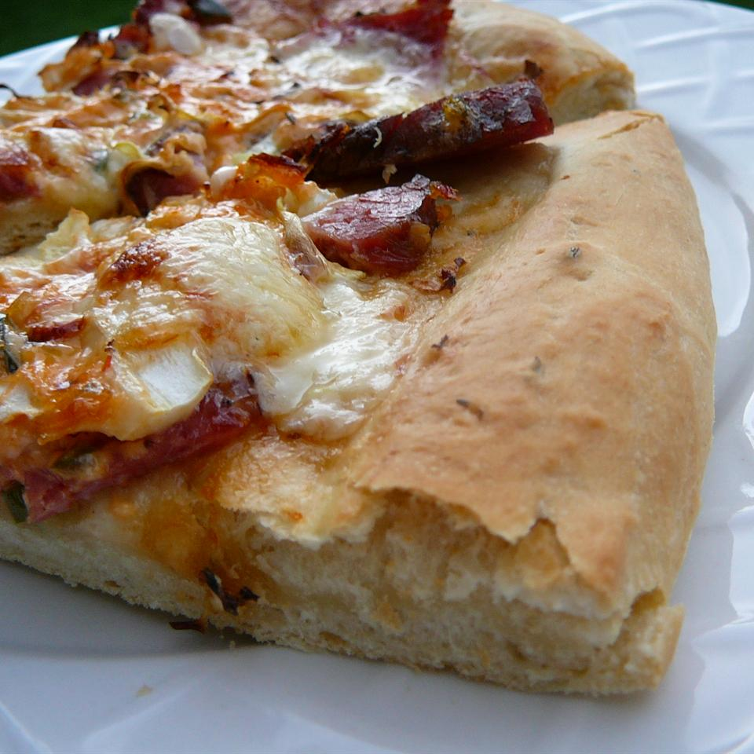

Valentino's Pizza Crust

Description
This is an excellent pizza crust recipe. I have found it is really good
when baked on a pizza stone.
Ingredients
- 1 cup warm water(110 degrees F/45 degrees C
- 1 tablespoon white sugar
- 2¼ teaspoons active dry years
- 3 tablespoons olive oil
- 1 teaspon salt
- 2½ cups all-purpose flour
Steps
- Stir water, sugar and yeast together until dissolved.
- Add the olive oil and the salt.
- Stir in the fluor until well blended.
- Let dough rest for 10 minutes.
-
Pat dough into pan or on to a pizza stone using fingers dipped in olive
oil.
- If desired sprinkle basil, thyme or other seasonings on crust.
-
Top with your favourite pizza toppings and bake for 15 to 20 minutes in
a preheated 425 degree oven.